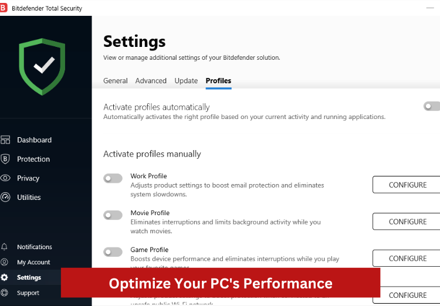

SHORT ON TIME? HERE’S A QUICK SUMMARY
Bitdefender is a well-respected and widely used cybersecurity company that offers a wide range of products and services to protect individuals, SME’s, and large enterprises from cyber threats. The company's products are known for their high level of protection against malware as well as their regular updates to protect against new threats.
The software has a user-friendly interface and boast of extra features such as a VPN, mic and webcam protection, Identify theft protection, social attack protection, parental controls, and many more. Bitdefender's performance is good and has minimal impact on system resources. Additionally, it is very simple to use across all platforms and operating systems and is less expensive than the majority of rival brands.
Bitdefender also performed flawlessly in all of our tests against all types of malware samples. Thanks to its cloud-based antivirus engine, it didn’t cause our computers to lag even when performing full system scans. Furthermore, it has some of the best web protections available, detecting more dangerous websites than Chrome, Firefox, and Edge's built-in security features.
Our internal testing results have corroborated those of multiple third-party labs. The antivirus software was named "Product of the Year" by AV-Comparatives, "Best Antivirus" by AV-Test, and "Most Effective Protection" by Virus Bulletin. In addition, it is a Leader in the Endpoint Protection Platforms Magic Quadrant published by Gartner.
Bitdefender is anticipated to rank among the best antivirus programs of 2023 overall. Continue reading as we go into more detail about its main parts.
Bitdefender is a well-respected and widely used cybersecurity company that offers a wide range of products and services to protect individuals, SME’s, and large enterprises from cyber threats. The company's products are known for their high level of protection against malware as well as their regular updates to protect against new threats.
The software has a user-friendly interface and boast of extra features such as a VPN, mic and webcam protection, Identify theft protection, social attack protection, parental controls, and many more. Bitdefender's performance is good and has minimal impact on system resources. Additionally, it is very simple to use across all platforms and operating systems and is less expensive than the majority of rival brands.
Bitdefender also performed flawlessly in all of our tests against all types of malware samples. Thanks to its cloud-based antivirus engine, it didn’t cause our computers to lag even when performing full system scans. Furthermore, it has some of the best web protections available, detecting more dangerous websites than Chrome, Firefox, and Edge's built-in security features.
Our internal testing results have corroborated those of multiple third-party labs. The antivirus software was named "Product of the Year" by AV-Comparatives, "Best Antivirus" by AV-Test, and "Most Effective Protection" by Virus Bulletin. In addition, it is a Leader in the Endpoint Protection Platforms Magic Quadrant published by Gartner.
Bitdefender is anticipated to rank among the best antivirus programs of 2023 overall. Continue reading as we go into more detail about its main parts.
👍 PROS:
- Real-time protection against all viruses and ransomware
- Regular updates to the software to protect against new threats
- Provides a feature not found in most antivirus software: parental control
- Solid defense against malware backed by excellent scores in multiple independent lab tests
- Protects online privacy and personal information so you can browse and shop securely
- Strong protection against phishing attacks
- The security for the webcam and the microphone is a big plus
- Multi-platform support
- Uncluttered and sleek-looking user interface
- Scans your social networking profiles for malicious links and other cyber threats
- Once installed, Bitdefender works quietly behind the scenes and rarely interferes with other programs
- Small footprint with minimum system resources required, so it runs well even on older or lower-end computers.
- Multiple plans are available for both home users and businesses
- Provides Identity Theft coverage up to $2 million
- 24/7 customer and tech support via phone, chat, email, Bitdefender forum, and even Twitter
👎 CONS:
- Limited features on Mac compared to Windows
- The iOS app is a little underwhelming
- Scanning could be faster
- VPN is limited to 200MB per day
- Some features are only available for the paid version of the software
Get Bitdefender - Protect Your Devices!
BITDEFENDER KEY DATA
GENERAL INFO:
Price: From $23.99
Money-back Guarantee: YES
Platforms: Windows, macOS, Android, iOS
SCANNING:
Real-time Antivirus: YES
USB Virus Scan: YES
Auto Virus Scanning: YES
Manual Virus Scanning: YES
Registry Startup Scan: YES
Scheduled Scan: YES
THREAT TYPE:
Anti-Spyware: YES
Anti-Trojan: YES
Anti-Phishing: YES
Anti-Adware: YES
Anti-Ransomware: YES
Anti-Malware: YES
Email-Protection: YES
Anti-Fraud: YES
Adware Prevention: NO
Anti-Worm: YES
Anti-Rootkit: YES
Anti-Spam: YES
Chat/IM Protection: NO
EXTRA FEATURES:
Personal Firewall: YES
Microphone Monitor: YES
Webcam Protection: YES
Password Manager: YES
Anti-Tracker: YES
Gamer Mode: YES
File Encryption: YES
Smartphone Optimizer: NO
Safe Browser: YES
Safe Online Banking: YES
Parental Controls: YES
VPN Service: YES
Social Network Protection: YES
File Shredder: YES
Battery Mode: YES
Device Tune-up: YES
SUPPORT:
Live Chat: YES
Email Support: NO
Phone Support: YES
Ticket Support: YES
SEE WHAT USERS HAVE TO SAY
Trustpilot Rating: 4.1 out of 5 from 5,717 reviews
“Excellent customer experience when needed. This product does what it says on the box with little or no interaction required. Thus allowing me to get on and use both my laptop and mobile as tools for the job without distraction as to how and what it is doing. Previous security providers result in daily interruptions and updates. Bitdefender customer service is outstanding. I had picked up a malware issue on my mobile prior to loading Bitdefender, and with their support, the issue was corrected in a helpful and understanding manner.”
“Been using Bitdefender Total protection and the VPN for a couple of years. Easy to install with no noticeable degradation of system performance. A nice touch is the Bitdefender Central portal which helps you keep tabs on all your devices that have Bitdefender installed. Easy to configure and essentially forget. Updates can be set from hourly in increments up to 24 hours and all but feature updates install “silently” to minimize disruption. A great product at a very fair price.”
“I was having glitches and issues with VPN, so I emailed Bitdefender and received a response with very clear directions on how to solve the issue. Their communication back to me was not only clear but you could tell that they care about educating their customers on how to solve and understand issues. Very impressive Customer Care at Bitdefender.”
“I always panic a bit and become anxious when I think my computer has a virus. Bitdefender has always kept my computer quite safe. I have only needed to contact Bitdefender one time, and within 1 hour of contact, Alberto M. responded, solved my problem, and then they patiently taught me what the issue was, and further taught me how to resolve it myself and how to prevent it from happening in the future. THIS is magnificent customer service. Thank you!”
WHO IS BEHIND BITDEFENDER?
Bitdefender is a Romanian cybersecurity and anti-virus software company, founded in 2001 by Florin Talpes. The company was initially focused on developing anti-virus software for personal computers. Over time, it expanded its product line to include internet security, endpoint security, and other cybersecurity products and services.
In 2017, Bitdefender was acquired by a private equity firm, Francisco Partners, and is now a privately held company. The company has offices in several countries, including Romania, the United States, Germany, and the United Kingdom.
WHAT EXACTLY IS BITDEFENDER?
Bitdefender is a software company that develops and sells a variety of cybersecurity products and services. The company's main products include antivirus software, internet security software, and endpoint security software.
Bitdefender's antivirus software is designed to protect personal computers, laptops, and mobile devices from malware and other malicious software. The internet security software provides additional protection for internet-connected devices, including firewalls, spam filters, and parental controls. The endpoint security software is designed to protect business networks and servers from cyber threats.
In addition to these products, Bitdefender also offers other cybersecurity solutions such as cloud security, network security, and security for IoT devices.
Overall, Bitdefender's products are designed to protect users from a wide range of cyber threats, including viruses, malware, spyware, phishing, and more. The company's goal is to help users and businesses secure their digital lives and protect against cyber attacks.
The main features of Bitdefender's products include the following:
• Real-time malware and virus protection
• Automatic updates to protect against new threats
• Advanced threat defense, Advanced threat protection, Advanced threat hunting and Advanced threat quarantine
• Behavioral detection of threats
• Firewall to protect against hacking and other network-based attacks
• Spam filters to protect against unwanted emails
• Parental controls to protect children from inappropriate content
• File encryption to protect sensitive files
• Advanced threat intelligence, Advanced threat response, Advanced threat remediation
• Additional features such as SafePay, Anti-Phishing, Anti-Fraud, Anti-Spam, File Shredder, Rescue mode, Game, movie and work mode, Webcam protection, VPN.
It's important to note that these features may vary depending on the product or service, and not all features are available on all products. Some of the features are only available on the paid version of the software.
WHO IS BITDEFENDER FOR?
Bitdefender is ideal for a wide range of users, including:
Individuals: Bitdefender's antivirus and internet security software are designed to protect personal computers, laptops, and mobile devices from malware and other cyber threats. The software is easy to use and offers a variety of features, such as firewalls, spam filters, and parental controls, to help users secure their digital lives.
Small and medium-sized businesses: Bitdefender's endpoint security software is designed to protect business networks and servers from cyber threats. The software offers a variety of features, such as data encryption, network security, and threat intelligence, to help businesses keep their data and networks safe.
Enterprises: Bitdefender's enterprise-level security solutions are designed to protect large organizations from cyber threats. The software offers a variety of features such as advanced threat protection, incident response, and threat intelligence to help organizations keep their data and networks safe.
IoT and Cloud users: Bitdefender also provides security solutions for IoT and Cloud users, which can be used to protect IoT devices and cloud infrastructure from cyber threats.
Overall, Bitdefender is ideal for users who are looking for a reliable and effective solution to protect their devices and networks from cyber threats. The company offers a wide range of products and services that can be tailored to meet the needs of different users and organizations, from individuals to large enterprises.
WHAT ARE THE FEATURES?
Bitdefender utilizes a combination of behavioral and heuristic detection technologies to provide complete and real-time protection against all types of threats: viruses, worms, Trojan, adware, spyware, zero-day exploits, rootkits, and ransomware. From botnet-related URLs to brute force attacks, it also protects at a network level to stop the intrusion before it happens.
Bitdefender offers a wide range of features depending on the product or service. These features can be divided into three categories: Protection, Privacy, and Performance. Let’s go through all the features under the Protection category first:
Protection:
ARE THERE ADDITIONAL FEATURES?
Here’s all the additional features you will get under the Performance and Privacy categories:
Performance:

Privacy:
Note that availability of features may vary by product and plan.
HOW DID IT PERFORM IN INDEPENDENT LAB TESTS?
Bitdefender is currently rated perfect by all four independent antivirus testing labs: AV Test, AV Comparatives, MRG Effitas, and SE Labs. Bitdefender got a perfect score of 6.0/6.0 for both Protection and Performance in the Sep-Oct/2022 AV-TEST Product Review and Certification Report. It also got 5.5/6.0 for how easy it was to use, which helped it win the "Top Product" award.
AV-Comparatives, an independent organization based in Austria that is known for testing and reviewing antivirus software in an unbiased way, also gave Bitdefender the highest score in their 'Advanced Threat Protection' test in 2022. It received the ADVANCED+ rating, which is the highest for detecting and blocking the vast majority of threats in the pre- or post-execution phases, with no false positives.
It also passed the rigorous banking defense test administered by MRG-Effitas with flying colors, earning a Level 1 certification in the lab's 360 assessment. Lastly, SE Labs has awarded it their highest possible AAA rating.
IS THERE A FREE VERSION?
Yes, Bitdefender does offer a free version of its software. The free version of Bitdefender Antivirus is called Bitdefender Antivirus Free Edition. It provides basic antivirus protection against malware and other cyber threats and it's available for Windows. It includes features such as real-time malware protection, automatic updates, and behavioral detection of threats. However, it doesn't include additional features such as firewalls, spam filters, parental controls, and file encryption which are available in the paid version of the software. It's important to note that the free version may have limited functionality and may not offer the same level of protection as the paid version.
HOW MUCH IS IT?
Bitdefender offers a variety of price plans for its products, depending on the specific product and level of protection you need.
All-in-One Plans:
• Premium Security - $59.99/year*
• Ultimate Security - $99.98/year
Device Security Plans:
• Antivirus Plus - $24.99/year
• Internet Security - $34.99/year
• Total Security - $39.97/year
• Family Pack - $44.99/year
• Small Office Security - $89.99/year
Privacy Solutions:
• Premium VPN - $29.99/year (Included in the All-in-One plans)
• Password Manager - $19.99/year (Included in the All-in-One plans)
Identity Protection:
• Identity Theft Protection Premium - $129.98/year (Included in the All-in-One plans)
• Identity Theft Protection Standard - $79.99/year (Included in the All-in-One plans)
• Digital Identity Protection - $34.99/year
* It's important to note that these prices are subject to change and is for the first year only. Renewal prices may change and can vary depending on the number of devices and users, the country you're located in, and the duration of the subscription.
IS IT EASY TO USE?
Bitdefender is generally considered to be easy to use, with a user-friendly interface. The installation process is straightforward and should be easy to follow, even for users who are not particularly tech-savvy.
The interface of Bitdefender products is clean and intuitive, with easy-to-understand icons and menu options. The main interface displays key information such as the protection status and the last scan date, and provides access to the software's main features. Users can also access detailed information about the software's settings and options via the settings menu.
The installation process is also easy, once you have purchased the software you will receive an email with instructions on how to download and install it, you can also download the software from the Bitdefender website. The installation process will guide you through the setup process and will prompt you to make any necessary configuration changes. Once the software is installed, it will run a quick scan to ensure that your system is protected.
Overall, Bitdefender is designed to be easy to use, with a simple and intuitive interface, and a straightforward installation process. The software is designed to be user-friendly and easy to navigate, making it accessible to users of all skill levels.

SYSTEM REQUIREMENTS AND IMPACT ON SYSTEM RESOURCES
Bitdefender has specific system requirements for its software to run properly. Here are some of the general system requirements for Bitdefender:
• Operating Systems: Windows 10 (all editions), Windows 8.1 (all editions), Windows 8 (all editions), • Windows 7 (all editions), Windows Vista (all editions), Windows XP (32-bit)
• Processor: 1.6 GHz or faster
• Memory: 1 GB of RAM or more
• Hard Disk Space: 1.5 GB free space
• Internet connection: needed to download, activate and maintain updates of the software
• Internet Explorer version 10 or higher, or the latest version of Google Chrome or Mozilla Firefox
In terms of the impact on system resources, Bitdefender is known to have a minimal impact on system resources. The software is designed to run in the background, and it will not slow down your computer or take up too much space on your hard drive. In general, Bitdefender is optimized to use minimal system resources while still providing maximum protection. However, it's worth noting that the resource usage may vary depending on the specific product or service and the specific configuration of your system, so it's always a good idea to monitor your system's performance after installing any new software.
BITDEFENDER ON-THE-GO
Bitdefender Mobile Security for Android and iOS is designed to protect your Android device from malware, viruses, and other cyber threats. It includes features such as real-time malware protection, automatic updates, and behavioral detection of threats. It also includes additional features such as anti-theft protection, which allows you to locate and remotely wipe your device in case it's lost or stolen. It also includes a privacy advisor that checks the apps' permissions and makes recommendations for improving your privacy.
Bitdefender offers apps for both Android and iOS users and we tested it on both platforms to see if they are equally good and provide adequate protection for your device regardless of the operating system it runs on.
The differences between Android and iOS versions are significant. While both apps were simple to download and install, the user experience was quite different. The Android version clearly outperforms the iOS apps, which only cover the basics and feel like an afterthought.
To demonstrate, here’s what you get with the Android app:
• Malware Scanner
• On-Demand & On-Install Scan
• Web Protection
• Scam Alert
• WearON
• Anti-Theft
• Autopilot
• Battery & Performance Saver
• Bitdefender VPN
• App Lock
In comparison, here’s what’s available on the iOS app:
• Web Protection
• Bitdefender VPN
• Privacy Monitoring
HOW DID WE CHOOSE BITDEFENDER AS A TOP ANTIVIRUS SOFTWARE FOR 2025?
When deciding which antivirus programs to include in our top 10 list, our team considered the following factors.
Protection level: The antivirus should provide comprehensive protection against malware, viruses, and other cyber threats.
Additional features: Some antiviruses offer additional features such as a firewall, spam filter, parental controls, and file encryption. Consider which features you need and choose an antivirus that includes them.
System requirements: Make sure that your system meets the minimum requirements for the antivirus you choose.
Price: Consider the cost of the antivirus and whether it fits your budget.
User-friendliness: The antivirus should be easy to use and navigate.
Impact on system resources: The antivirus should have minimal impact on system resources, it should not slow down your computer or take up too much space on your hard drive.
Reviews and ratings: Before making a final decision, it's always a good idea to read reviews and ratings of the antivirus to get a better understanding of how it performs and how satisfied other users are with it.
Technical support: The antivirus should have a good level of technical support, this means that the company should offer help and assistance in case of any problem with the software.
CUSTOMER SUPPORT
The company offers a wide range of support options, including a knowledge base, FAQs, a forum, email, phone, and live chat support. This means that you can get help and assistance in various ways, depending on your preference and the urgency of your issue.
We’ve reached out to the support team quite a few times and they’ve been nothing but knowledgeable and helpful. They provided clear and concise answers to our questions and were able to resolve most of our concerns in a timely manner. They also offer support in multiple languages, which makes it easy for customers all around the world to get help.
Additionally, Bitdefender offers a comprehensive online help center that includes detailed articles and tutorials on how to use the software, troubleshoot common issues, and more. This can be useful for users who prefer self-help options.
THE BOTTOM LINE
When it comes to antivirus software, Bitdefender is among the best. It protects you from malicious software like viruses, worms, and keyloggers that could otherwise compromise your computer. It's reasonably priced across its various plan tiers and offers robust malware protection that has impressed even third-party auditors. According to our testing, it is effective for both first-time users and seasoned veterans of antivirus programs. Its user-friendly design is a welcome change for anyone, and even those with no prior experience with computers will find plenty to like. People who have used antivirus software for a long time will notice a significant improvement in the number of options compared to a standard antivirus package. If there’s any downside to it, it’s that most plans come with the standard VPN which caps at 200MB. That being said, you can easily upgrade to the All-in-One plans or purchase it separately. All in all, Bitdefender earned top marks for us in terms of security, privacy, and performance.
FAQ
Is Bitdefender going to sell my information?
According to its privacy policy, Bitdefender will not share any information about its customers with third parties. However, it does collect some personal information when "absolutely necessary," although it makes every effort to keep that information anonymous.
Is Bitdefender a reputable company?
Yes. Bitdefender is currently one of the most secure antivirus programs on the market. It performed well in both independent lab tests and our tests. Independent tests detected both zero-day and four-week-old malware. Bitdefender, unlike other antivirus programs such as Kaspersky, Avast, and AVG, has never been involved in any security or privacy scandals.
Do I really need an antivirus?
An antivirus software is a useful tool for protecting your computer and personal information from malware, viruses, and other cyber threats. These types of software can help detect and remove malicious software before it can cause harm to your computer or steal your personal information.
There are many reasons why you might want to consider installing an antivirus software on your computer, including:
• Protection against malware: Antivirus software can help detect and remove malware, such as viruses, worms, and Trojans, that can damage your computer or steal your personal information.
• Protection against phishing: Many antivirus programs include features that can help protect you from phishing attacks, which are attempts to trick you into giving away personal information.
• Protection while browsing: Some antivirus software also offers real-time protection while you are browsing the internet to prevent you from accidentally visiting a malicious website.
In conclusion, it's highly recommended to have an antivirus software installed on your computer, but you also have to be aware of your online activities and be careful in order to have a full protection.
Is Bitdefender superior to Windows Defender?
Bitdefender outperforms Windows Defender in almost every way. Bitdefender provides better malware detection rates, real-time protection, phishing protection, ransomware protection, and parental controls. Bitdefender also includes a slew of other internet security tools, such as system optimization, a VPN, identity theft protection, ad blocker, anti-tracker, and a password manager. It's also far more user-friendly than Windows Defender.
What's the difference between the free version of Bitdefender's VPN and the paid version?
Bitdefender products for Windows, Android, macOS, and iOS all come with the standard version by default. It gives you 200 MB of daily traffic per device (only Bitdefender Small Office Security comes with 500 MB of daily traffic) and connects you automatically to the best server without giving you the option to change it. If you buy the Premium VPN subscription, you can connect to any server and use as much data as you want. Once you start your subscription, you'll be able to use the Premium version's features.
When is it recommended to use Bitdefender’s VPN?
With a VPN, you can reduce the likelihood of being tracked online and hide the contents of your web traffic from some observers. It offers defense against malware, social engineering fraud schemes, and phishing websites—the threats you're most likely to run into online. Utilize Bitdefender's VPN in the following circumstances:
• When you’re travelling and using public Wi-FI
• When you’re sending sensitive information over the web
• When you’re banking online or just browsing the web
• When you want to address buffering issues
• When you need to hide your IP address